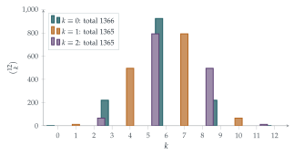

STEP I 1990, Question 2
Read the question before you go on. It is in the STEP Support Programme’s question database: step.maths.org/questions/90-s1-q2
The hook
The binomial coefficients in a row of Pascal’s triangle add up to \(2^n\): put \(x = 1\) in \((1 + x)^n\). Put \(x = -1\) instead and you get the alternating sum, which is \(0\); adding the two shows that the coefficients in even positions add up to \(2^{n-1}\), exactly half. So the even-numbered and odd-numbered entries split the total evenly.
What about every third coefficient? There is no real number \(x\) that can pick out positions \(0, 3, 6, \ldots\). But there is a complex one. The cube roots of unity act as a filter: averaged over \(1\), \(\omega\) and \(\omega^2\), the powers \(\omega^k\) give \(1\) when \(k\) is a multiple of \(3\) and \(0\) otherwise. This idea, the roots-of-unity filter, is a small version of the discrete Fourier transform, one of the most important algorithms ever devised.
Before you start
\(\omega\) is a root of \(z^3 - 1 = 0\). Factorise \(z^3 - 1\). Why does this give \(1 + \omega + \omega^2 = 0\)?
\(z^3 - 1 = (z - 1)(z^2 + z + 1)\). Since \(\omega^3 = 1\) but \(\omega \neq 1\), \(\omega\) must be a root of the second factor: \(\omega^2 + \omega + 1 = 0\). Geometrically, \(1\), \(\omega\) and \(\omega^2\) are the vertices of an equilateral triangle centred at the origin, and their sum is the centre of mass of the triangle, which is \(0\).
Working it through
Stage 1 Moduli and arguments
From \(1 + \omega + \omega^2 = 0\), \(1 + \omega^2 = -\omega\). Since \(\omega = e^{2\pi\mathrm{i}/3}\), \(-\omega = e^{\mathrm{i}\pi}e^{2\pi\mathrm{i}/3} = e^{5\pi\mathrm{i}/3} = e^{-\pi\mathrm{i}/3}\). So \(1 + \omega^2\) has modulus \(1\) and argument \(-\frac\pi3\). Similarly \(1 + \omega = -\omega^2 = e^{\pi\mathrm{i}/3}\), with modulus \(1\) and argument \(\frac\pi3\).
Stage 2 The filter
What is \(1 + \omega^k + \omega^{2k}\) when \(k\) is a multiple of \(3\)? When it is not?
If \(3 \mid k\), then \(\omega^k = 1\) and the sum is \(3\). If not, \(\omega^k\) is \(\omega\) or \(\omega^2\), and in either case \(1 + \omega^k + \omega^{2k} = 1 + \omega + \omega^2 = 0\). So the expression \(\frac13(1 + \omega^k + \omega^{2k})\) is \(1\) when \(3 \mid k\) and \(0\) otherwise: it is a detector for multiples of \(3\).
Add up \((1 + \omega^r)^n\) for \(r = 1, 2, 3\), expanding each by the binomial theorem. What do you get?
Since \(\omega^3 = 1\), \[(1 + \omega)^n + (1 + \omega^2)^n + (1 + 1)^n = \sum_{k=0}^{n} \binom nk\bigl(\omega^k + \omega^{2k} + 1\bigr) = 3\sum_{3 \mid k} \binom nk.\] On the other hand, by Stage 1, \[(1 + \omega)^n + (1 + \omega^2)^n + 2^n = e^{n\pi\mathrm{i}/3} + e^{-n\pi\mathrm{i}/3} + 2^n = 2\cos\frac{n\pi}{3} + 2^n.\] Dividing by \(3\) gives the formula.■
Stage 3 Two calculations
For \(n = 25\): \(\frac{25\pi}{3} = 8\pi + \frac\pi3\), so \(\cos\frac{25\pi}{3} = \frac12\), and \[\binom{25}{0} + \binom{25}{3} + \cdots + \binom{25}{24} = \frac{33554432 + 1}{3} = 11184811.\]
For the second sum we need positions \(k \equiv 2 \pmod 3\). How can you modify the filter to detect \(k \equiv 2\) instead of \(k \equiv 0\)?
Shift the detector: \(\frac13\bigl(1 + \omega^{k-2} + \omega^{2(k-2)}\bigr)\) is \(1\) exactly when \(k \equiv 2 \pmod 3\). Since \(\omega^{-2} = \omega\) and \(\omega^{-4} = \omega^2\), this gives \[\sum_{k \equiv 2} \binom nk = \frac13\Bigl(2^n + \omega(1 + \omega)^n + \omega^2(1 + \omega^2)^n\Bigr).\] With \(n = 24\), \((1 + \omega)^{24} = e^{8\pi\mathrm{i}} = 1\) and likewise \((1 + \omega^2)^{24} = 1\), so the bracket is \(2^{24} + \omega + \omega^2 = 2^{24} - 1\). With \(2^{24} = 16777216\), \[\binom{24}{2} + \binom{24}{5} + \cdots + \binom{24}{23} = \frac{16777215}{3} = 5592405. \qed\]

Looking back
Averaging over roots of unity filters by residue. \(\frac13\sum_{r}\omega^{rk}\) is \(1\) or \(0\) according as \(3\) divides \(k\). Summing a polynomial’s values at the roots of unity picks out every third coefficient.
Shifting the filter. Multiplying by \(\omega^{-rj}\) before averaging picks out the coefficients with \(k \equiv j\).
Complex numbers for real answers. The answer is a whole number, and the question was about whole numbers, but the route went through the complex plane.
What’s really going on
Replace \(3\) by any \(N\) and \(\omega\) by \(e^{2\pi\mathrm{i}/N}\). For a list of numbers \(a_0, a_1, \ldots, a_{N-1}\), the numbers \[\hat a_r = \sum_{k=0}^{N-1} a_k\,\omega^{rk}\] form its discrete Fourier transform, and the filter identity \(\sum_r \omega^{rk} = N\) or \(0\) is what lets you recover the \(a_k\) from the \(\hat a_r\). The transform splits a signal into its component frequencies. In 1965 James Cooley and John Tukey published a way to compute it in about \(N\log_2 N\) steps instead of \(N^2\), the fast Fourier transform; Gauss had found essentially the same idea in 1805 but never published it. The FFT is used in audio and image compression (MP3 and JPEG), in mobile phone signals, in medical scanners and in multiplying enormous numbers, and it is often listed among the most important algorithms of the twentieth century.
Generating functions
The filter is one instance of a bigger idea: a sequence \(a_0, a_1, a_2, \ldots\) can be packaged as a polynomial or power series \(A(x) = \sum a_kx^k\), its generating function, and operations on the sequence become operations on the function. Evaluating at \(1\) sums the sequence; evaluating at roots of unity picks out residue classes; differentiating weights the terms by \(k\). This turns many counting problems into algebra, and it is a central technique in Chapter 9. The same filter, applied to \((1 + x)^n\) with fifth roots of unity, connects to the regular pentagon and the golden ratio; we pursue the algebra of roots of unity in Section 6.1.
The thinking skill
To pick out the terms of a sum that satisfy a condition, find a function that is \(1\) on the terms you want and \(0\) on the rest, built from a symmetric average.
Averaging over the roots of unity is the classic example. The same principle, “average over a group of symmetries to isolate the part you want”, appears throughout algebra, from the roots-of-unity filter to the representation theory of groups.
Try this next
Even positions. Use the filter with square roots of unity (\(1\) and \(-1\)) to show that \(\binom n0 + \binom n2 + \binom n4 + \cdots = 2^{n-1}\).
The other residue. Find a formula for \(\binom n1 + \binom n4 + \binom n7 + \cdots\), and check that the three formulas add up to \(2^n\).
Every fourth. Using \(\mathrm{i}\), show that \(\binom n0 + \binom n4 + \binom n8 + \cdots = \frac14\Bigl(2^n + 2^{n/2+1}\cos\frac{n\pi}{4}\Bigr)\).
Divisibility. How many subsets of \(\{1, 2, \ldots, 12\}\) have a number of elements divisible by \(3\)? How many have a sum divisible by \(3\)? (Hint for the second: consider \(\prod_{j=1}^{12}(1 + x^j)\) at the cube roots of unity.)
Further reading
Herbert Wilf, generatingfunctionology (A. K. Peters; free online). A delightful introduction to generating functions; the roots-of-unity filter appears early on.
Arthur Benjamin & Jennifer Quinn, Proofs That Really Count (Mathematical Association of America). Binomial identities proved by counting.
T. W. Körner, Fourier Analysis (Cambridge University Press). Includes the discrete Fourier transform and the FFT.